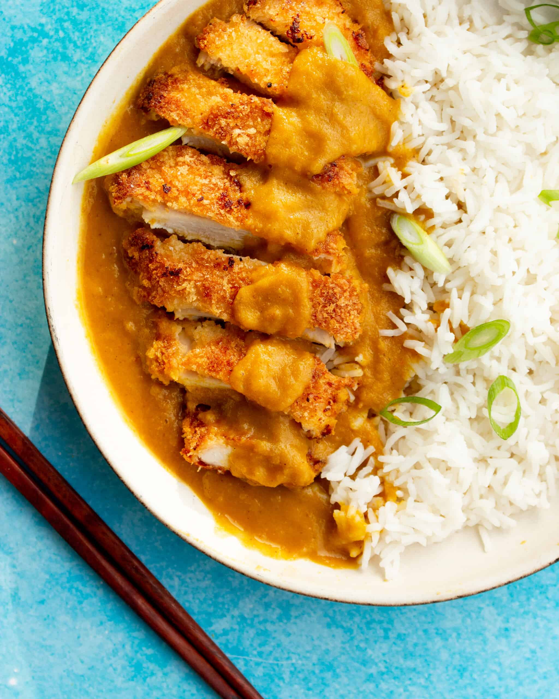

Home
Chicken katsu curry

Description
Chicken katsu curry is a Japanese dish of fried chicken cutlets covered in a thick, sweet, and aromatic curry sauce. The dish is often served with rice.
Ingredients:
- 4 tbsp rapeseed oil
- 400g cooked rice
- half peeled cucumber
- handful mint leaves
Curry sauce
- 1 tbsp rapeseed oil
- 2 onions
- 2 large carrots
- 2 garlic cloves
- thumb-sized piece ginger
- 1 tbsp curry powder
- half tsp ground turmeric
- 400ml can coconut milk
- 2 tsp maple syrup
Chicken katsu
- 1 tbsp cornflour
- 8 chicken mini fillets
- 200g breadcrumbs
Instructions
- First, make the curry sauce. Heat 1 tbsp oil in a pan, cook the onions and chopped carrots until the onions are soft and starting to caramelise, about 8 mins. Add the garlic and ginger and sizzle for another 30 secs, then stir in the curry powder and turmeric. Once the spices are warmed through, add the coconut milk, maple syrup or honey and 100ml water. Season well, cover and simmer over a low heat for 20 mins.
- Now make the katsu. In a wide bowl, mix the cornflour with 4 tbsp water and some seasoning. Dip the chicken or tofu into the flour mixture (if cooking for both vegans and meat eaters, make sure you dip the tofu first to avoid mixing it with meat). Place the breadcrumbs in another bowl and dip the chicken or tofu in it, turning until well coated.
- When the onions and carrots in the curry sauce are soft, blitz using a hand or table-top blender. If the sauce is too thick, add a little more water, check the seasoning, adding more salt, maple syrup or some lime juice, if you like. Keep warm.
- Heat the oil in a frying pan and cook the chicken or tofu for 4-5 mins on each side until golden and cooked through. Warm the rice and divide between bowls. Top with the curry sauce, katsu chicken or tofu, and serve with the cucumber, carrot ribbons, herbs and lime wedges.